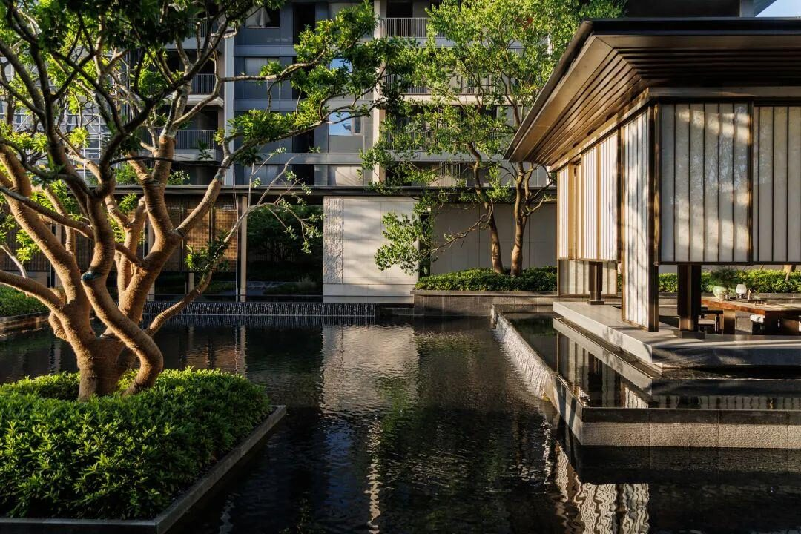
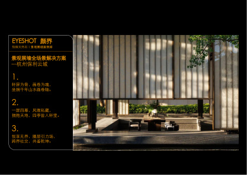
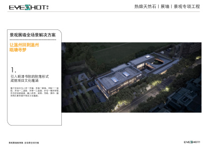
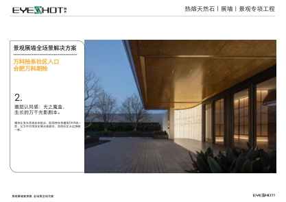
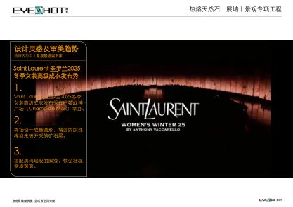
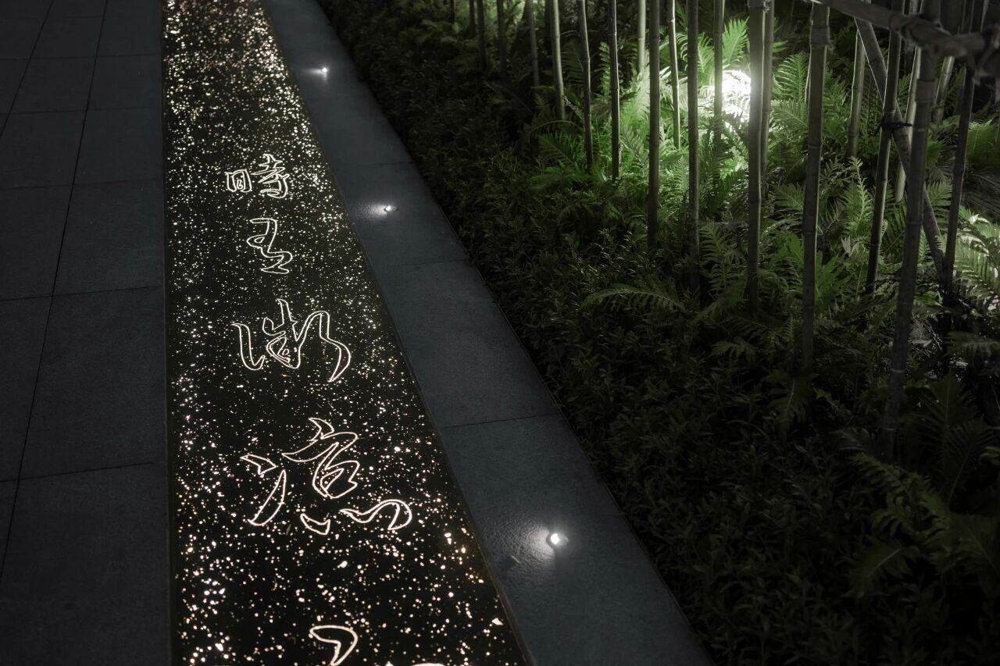
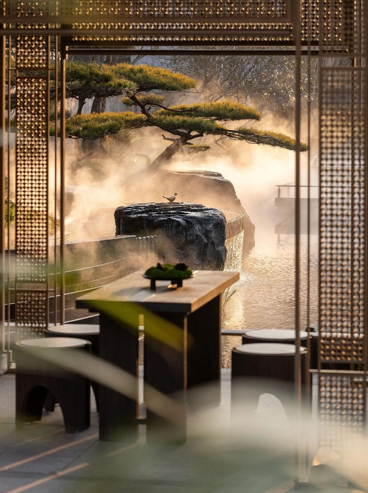
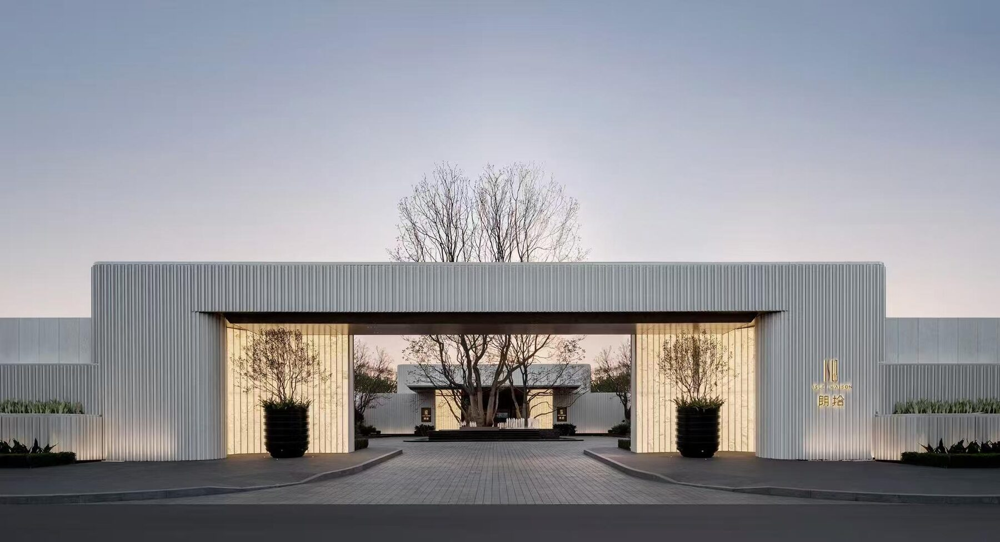

让展墙、光影与景观外界面形成同一套材料秩序
在展墙、庭院边界与公共空间节点中，通过透光肌理、竖向分格与自然绿意的叠合，把材料从单一饰面推进为可被远观、近看和夜间照明共同感知的空间界面。
景观展墙、入口界面与公共空间立面。
透光肌理、竖向节奏与绿植投影。
户外节点、灯光配合与长期维护建议。
补入景观园林 PDF 的完整项目页，让展墙、光影、竖向分格与庭院关系一次看清。




轩屏为骨，画卷为魂——一座活态山水画卷轴

明清书院院落里的长轴展卷

宋式歇山顶对话当代玻璃幕墙

金镶玉社区入口，模块化发光系统
发送项目阶段、空间类型与预期使用位置，我们以样板、图纸配合与工程建议回应。